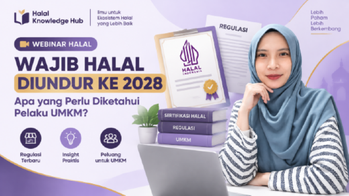
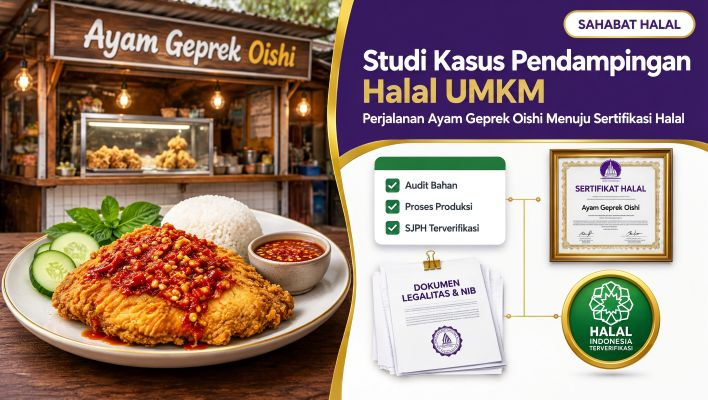

Artikel & Dokumentasi Pendampingan Halal UMKM
Kumpulan artikel edukasi, studi kasus pendampingan, sertifikasi halal, legalitas usaha, dan pengembangan UMKM.

Catatan dari Pelatihan: Peningkatan Daya Saing UMKM menuju Pasar Global
Kegiatan pendampingan dan penguatan kapasitas UMKM menjadi langkah penting dalam meningkatkan daya saing produk lokal di pasar yang semakin kompetitif. Melalui berbagai sesi edukasi, peserta memperoleh pemahaman mengenai strategi pemasaran global, pemanfaatan marketplace internasional, penentuan harga ekspor, sistem pembayaran lintas negara, hingga pengelolaan risiko nilai tukar. Materi yang disampaikan tidak hanya berfokus pada teori, tetapi juga praktik dan studi kasus yang relevan dengan kebutuhan pelaku usaha. Selain menambah wawasan, kegiatan ini mendorong UMKM untuk lebih siap menghadapi peluang pasar internasional, memperluas jaringan bisnis, serta memanfaatkan teknologi digital sebagai sarana pengembangan usaha yang berkelanjutan dan berdaya saing global.

Wajib Halal Diundur ke 2028?
Penyesuaian tahapan sertifikasi halal hingga 2028 bukan berarti kewajiban halal dihapus. Melalui webinar HalalTalk Series, H. M. Fuad Nasar menjelaskan pentingnya memahami literasi halal, konsep halal dan thayyib, serta peran sertifikasi halal dalam perlindungan konsumen dan penguatan daya saing industri halal Indonesia.

Studi Kasus Pendampingan Halal UMKM Ayam Geprek Oishi
Sertifikasi halal merupakan salah satu bentuk komitmen pelaku usaha dalam menghadirkan produk yang aman, terpercaya, dan memberikan ketenangan bagi konsumen. Bagi UMKM, proses sertifikasi halal tidak hanya berkaitan dengan administrasi, tetapi juga mencakup identifikasi produk, verifikasi lokasi usaha, pemeriksaan bahan baku, hingga penyusunan dokumen pendukung. Salah satu pelaku usaha yang mengikuti proses pendampingan sertifikasi halal adalah Ayam Geprek Oishi, sebuah usaha kuliner milik Asep Risdiyanto yang berlokasi di Pasar Wanadadi, samping pangkalan ojek terminal, Kabupaten Banjarnegara.